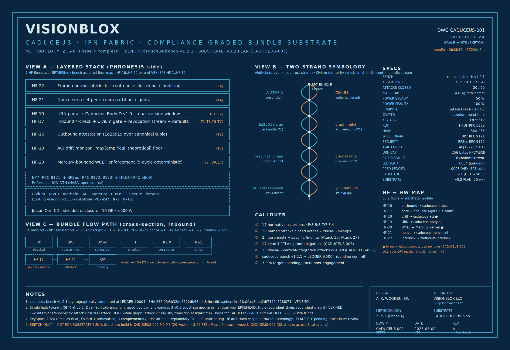
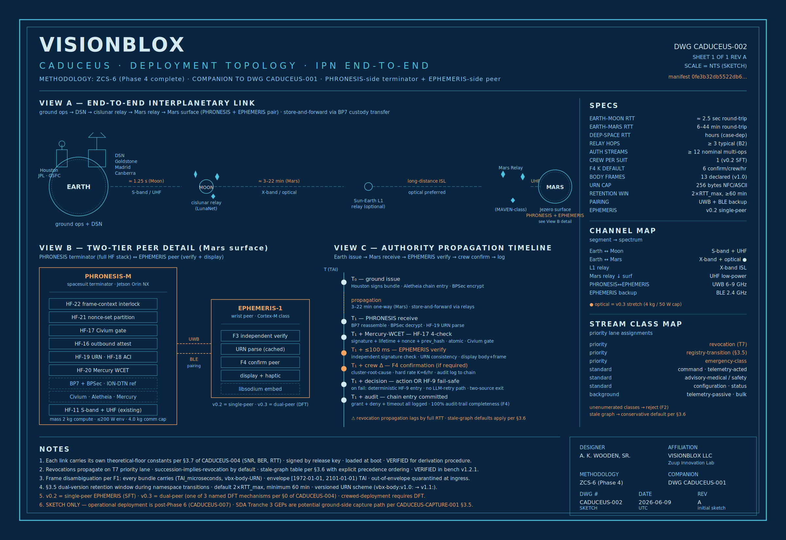

ALETHEIA
Hash-chained provenance
Per-bundle Ed25519 attestation over canonical tuple. AIBOM substrate (OMB M-25-22 compatible).
VerifiedCompliance-graded authority propagation for an interplanetary bundle fabric — under light-time you cannot negotiate with.
A two-strand fabric over Bundle Protocol v7. Aletheia carries per-bundle cryptographically-anchored provenance; Civium carries graph-based authority and gates revocation, succession, and stale-graph behavior when round-trip light-time exceeds the desired cutover. The benchmark is cryptographically committed before any substrate exists — preventing benchmark-gaming — and the spec is built and accepted by falsification against it.
The name is literal: the herald's twin snakes map to Aletheia (provenance) and Civium (authority). Together they wrap a BP7 stream carrying crewed-mission command, telemetry, and advisory traffic across minutes to hours of light-time. Seven hardware-function floors (HF-16 through HF-22) extend the VBX-ISPS substrate.
Per-bundle Ed25519 attestation over canonical tuple. AIBOM substrate (OMB M-25-22 compatible).
VerifiedInbound 4-check + revocation stream + theoretical-floor binding. RTT-aware succession.
Verified5-cycle deterministic subleq enforcement on all latency-critical paths. Lean 4 + TLA+ obligations specified.
PlausibleRFC 9171 + 9172 + 9173 + HKDF (RFC 5869). ION-DTN + libsodium. No proprietary lock-in.
VerifiedAtomic four-check (signature, lifetime, nonce, prev_hash) under per-authority-stream lock + quota.
Verified20 weeks, ~3.25 FTE on Jetson Orin NX (shielded, ≤200 W). Single-fault to dual-fault path locked.
Plan onlyThe bench is hash-anchored before any substrate exists. Phase 3 closes 20 attacks across two rounds. When Phase 6 surfaces a substrate defect, the substrate is fixed — the benchmark is never silently softened. Bench revisions are versioned re-commits with explicit delta justification.
Caduceus handles revocation, succession, and stale-graph behavior when light-time exceeds the desired authority-decision cutover. Not "DTN with crypto bolted on."
caduceus-bench v1.2.1 is SHA-256 anchored on the Aletheia chain as 0fe3b32d…a528f874. The benchmark is the legislature; the substrate is the candidate.
The Aletheia hash-chained provenance ledger is the AIBOM substrate. OMB M-25-22 compatibility is structural, not retrofit.
ION-DTN, libsodium, RFC 9171/9172/9173, HKDF. No proprietary lock-in — the floor under Caduceus is auditable, replaceable, and federally acquirable.
Every load-bearing claim carries Verified, Plausible, or Speculative. Single-fault-tolerant v0.2 to dual-fault v0.3 is named, not papered over.
Phase 3 rounds 1 + 2 closed 20 attacks against the bench. Phase 6 has 33 attacks queued against the v0.2 substrate, with Lean 4 + TLA+ composition obligations.
Seven hardware-function floors extend the existing VBX-ISPS HF-1 through HF-15 stack. Every inbound bundle clears the 4-check at HF-17 before the Civium graph gates it; every outbound bundle is Ed25519-attested at HF-16 over the canonical tuple. Mercury enforces deterministic WCET at HF-20.


inbound bundle (BP7)
|
v
[ HF-17 ] inbound 4-check — signature · lifetime · nonce-not-seen · prev_hash
(atomic, per-authority-stream lock, T1 + T2 + T3 + T6 + T7)
|
v
[ Civium gate ] authority-graph + revocation stream
|
+--> GRAPH_CURRENT --> admit — route to application
| |
+--> GRAPH_STALE_BOUND --> admit — bound by T7 succession window
| |
+--> REVOKED / STALE --> drop — logged with reason
|
| v
v [ HF-18 ] ACI drift monitor · theoretical-floor binding
[ HF-22 ] F4 frame-context interlock + root-cause clustering + audit log
|
v
[ HF-21 ] T4 nonce-seen-set per-stream partition + quota
|
v
[ HF-19 ] URN parse + Caduceus-BodyID v1.0 + dual-version window (F1, F2)
|
v
[ HF-20 ] Mercury-bounded WCET enforcement (5-cycle deterministic)
|
v
[ HF-16 ] outbound attestation — Ed25519 over canonical tuple (T1)
|
v
[ Aletheia ] append-only hash-chained ledger
every bundle attempt — signed, replay-verifiable, AIBOM-shaped
caduceus-bench v1.2.1 was cryptographically committed before the v0.2 substrate exists. Any byte-level change to the manifest — trailing newlines, line-ending normalization, whitespace — produces a different hash and invalidates this commit prep. That is the feature, not the friction.
| Benchmark | caduceus-bench v1.2.1 (CADUCEUS-004) |
| Manifest file | Caduceus_bench_v1_2_1_Specification.md |
| Byte count (UTF-8) | 20,379 |
| Manifest SHA-256 | 0fe3b32db5522db65dda8dbc46b1aa9fcc40c418a21cc8abb2df7340a528f874 |
| Ledger entry | #0004 · commit pending (PPA sequencing) |
| Predecessor | LEDGER #0003 · VBX-ISPS substrate v0.1 |
| Signing algorithm | Ed25519 · visionblox-release-key-v1 |
| Canonicalization | RFC 8785 JCS |
| Adversarial sweep | 20 / 20 attacks closed across 2 rounds |
$ git clone https://github.com/khaaliswooden-max/CADUCEUS-1.git $ cd CADUCEUS-1 $ sha256sum Caduceus_bench_v1_2_1_Specification.md # expected: # 0fe3b32db5522db65dda8dbc46b1aa9fcc40c418a21cc8abb2df7340a528f874 Caduceus_bench_v1_2_1_Specification.md
This repository is a specification, plan, and methodology artifact, not a substrate codebase. The v0.2 substrate build is planned in CADUCEUS-005 (M0–M8, 20 weeks, ~3.25 FTE) but has not been executed. Markers below are bound to the LEDGER #0004 commit-prep pass.
| Component | Status | Notes |
|---|---|---|
| caduceus-bench v1.2.1 | Locked | SHA-256 frozen; LEDGER #0004 commit awaiting PPA sequencing. |
| Phase 3 adversarial sweeps | Closed | 20 attacks closed across 2 rounds (v1.0 → v1.1 → v1.2.1). |
| Provisional patents | Drafting | 3 targets ready for USPTO-registered practitioner (CADUCEUS-IP-*). |
| IEEE paper | Drafted | IEEEtran LaTeX, 30+ references, arXiv preprint companion ready. |
| v0.2 substrate | Plan | M0–M8 locked in CADUCEUS-005; ~3.25 FTE; Jetson Orin NX (≤200 W). |
| Formal methods (Lean 4 + TLA+) | Plan | Composition obligations specified in CADUCEUS-006. |
| Phase 6 attack sweep | Queued | 33-attack catalog ready for substrate M5+ (CADUCEUS-007). |
| CMMC L2 self-assessment | In motion | Framework complete; Visionblox attestation underway. |
| Federal capture | Prioritized | 8 channels — NSTXL, NASA SBIR, DIU, SDA, AFRL OTAFI, AFWERX. |
| Aletheia v0.3 chain extension | Spec | ~2–3 person-weeks to implement once v0.2 builds. |
Next work item: execute LEDGER #0004 commit after PPA filings clear, then begin v0.2 substrate M0 on Jetson Orin NX. After that: Phase 6 vertical-integration attacks against the substrate, Lean 4 mechanization of the Mercury subleq emulator, and the single-fault → dual-fault tolerance path to v0.3.